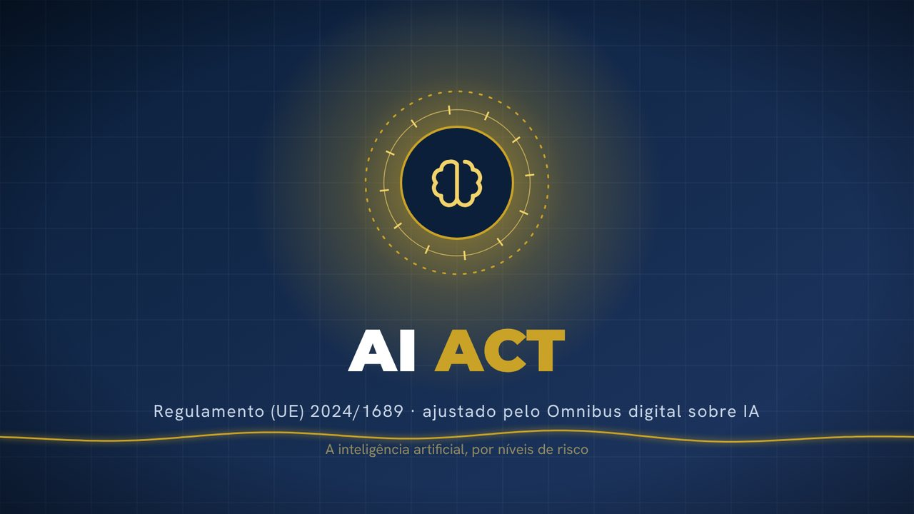

ARG
ARGARGOS › As normas em 4 minutos › Regulamento da IA
Regulamento da IA em 4 minutos: Portugal: aplicação direta, lei pendente
O regulamento da IA, ajustado pelo Omnibus digital, classifica a inteligência artificial por níveis de risco. A classificação decide tudo. Pela finalidade, não pela tecnologia. Em Portugal, o regulamento aplica-se diretamente.

- 0:00Decisões invisíveis
- 0:12As coimas
- 0:29Em Portugal
- 0:51AI Act
- 1:04Quatro níveis
- 1:25Risco elevado
- 1:44Datas
- 2:07Europa
- 2:24Autoridades
- 2:40O que fazer
Dados-chave
- 35 M€ ou 7 % do volume de negócios mundial
- 2.8.2026 aplicação geral e transparência
- 2.12.2026 fim da tolerância para a marcação
- 2.12.2027 risco elevado do anexo III
- 2.8.2028 IA em produtos regulados (anexo I)
- ANACOM Autoridade anunciada
- Sem diploma De execução ainda
- CNPD Dados pessoais
Transcrição
Texto completo da locução
0:00 · Decisões invisíveis
Um algoritmo descarta o teu currículo. Outro decide o teu crédito. Outro reconhece a tua cara no aeroporto. Ninguém te explicou. A partir de agora, alguém terá de o fazer.
0:12 · As coimas
O regulamento europeu da IA prevê coimas até trinta e cinco milhões de euros, ou sete por cento do volume de negócios mundial. Desde agosto de 2026: assinalar a IA e formar as pessoas. E Portugal ainda não tem lei nacional.
0:29 · Em Portugal
Em Portugal, o regulamento aplica-se diretamente. O Governo anunciou a ANACOM como autoridade de fiscalização. Mas ainda não há diploma de execução. A CNPD mantém-se competente para os dados pessoais. O Código do Trabalho já obriga a informar sobre algoritmos e IA. E quem altera a finalidade de um sistema passa a ser fornecedor.
0:51 · AI Act
O regulamento da IA, ajustado pelo Omnibus digital, classifica a inteligência artificial por níveis de risco. A classificação decide tudo. Pela finalidade, não pela tecnologia.
1:04 · Quatro níveis
Quatro níveis. Inaceitável: proibido, como a classificação social. Risco elevado: emprego, crédito, educação, biometria. Transparência: assinalar a IA e marcar conteúdos sintéticos. E risco mínimo, a maioria dos usos nas empresas. Para todos, a obrigação de literacia em IA.
1:25 · Risco elevado
O risco elevado exige um sistema de gestão completo. Gestão de riscos em todo o ciclo de vida. Dados representativos, sem enviesamentos. Documentação técnica e registo automático. E supervisão humana, robustez e cibersegurança. Artigos 9 a 15 do regulamento.
1:44 · Datas
As datas, depois do Omnibus. 2 de agosto de 2026: aplicação geral e transparência. 2 de dezembro de 2026: fim do período de tolerância para a marcação. 2 de dezembro de 2027: o risco elevado do anexo três. E 2 de agosto de 2028: a IA em produtos regulados.
2:07 · Europa
Na Europa, cada país tem o seu ritmo. A Alemanha tem a sua lei em vigor. A Itália também. A Dinamarca foi a primeira. Os Países Baixos têm o projeto em consulta. A França debate-o no Parlamento. E Espanha, Portugal e Bélgica ainda esperam.
2:24 · Autoridades
Em Portugal, a ANACOM será a fiscalização do mercado e o ponto de contacto único. A CNPD continua a vigiar os dados pessoais. As autoridades setoriais acompanham a banca e os seguros. E as coimas nacionais chegarão com o diploma de execução.
2:40 · O que fazer
O que fazer agora. Inventariar e classificar os sistemas, garantir a transparência, formar e informar os trabalhadores. O ARGOS prova-o: registos, supervisão humana e veredictos rastreáveis, com IA a correr localmente. Regulamento da IA: a IA propõe, a pessoa decide.
Perguntas frequentes
O que é Regulamento da IA?
O regulamento da IA, ajustado pelo Omnibus digital, classifica a inteligência artificial por níveis de risco. A classificação decide tudo. Pela finalidade, não pela tecnologia. O regulamento europeu da IA prevê coimas até trinta e cinco milhões de euros, ou sete por cento do volume de negócios mundial. Desde agosto de 2026: assinalar a IA e formar as pessoas. E Portugal ainda não tem lei nacional.
O que exige Regulamento da IA?
Quatro níveis. Inaceitável: proibido, como a classificação social. Risco elevado: emprego, crédito, educação, biometria. Transparência: assinalar a IA e marcar conteúdos sintéticos. E risco mínimo, a maioria dos usos nas empresas. Para todos, a obrigação de literacia em IA.
Quais são as datas-chave?
As datas, depois do Omnibus. 2 de agosto de 2026: aplicação geral e transparência. 2 de dezembro de 2026: fim do período de tolerância para a marcação. 2 de dezembro de 2027: o risco elevado do anexo três. E 2 de agosto de 2028: a IA em produtos regulados.
Qual é a situação em Portugal?
Em Portugal, o regulamento aplica-se diretamente. O Governo anunciou a ANACOM como autoridade de fiscalização. Mas ainda não há diploma de execução. A CNPD mantém-se competente para os dados pessoais. O Código do Trabalho já obriga a informar sobre algoritmos e IA. E quem altera a finalidade de um sistema passa a ser fornecedor. Em Portugal, a ANACOM será a fiscalização do mercado e o ponto de contacto único. A CNPD continua a vigiar os dados pessoais. As autoridades setoriais acompanham a banca e os seguros. E as coimas nacionais chegarão com o diploma de execução.
O que deve fazer uma empresa já?
O que fazer agora. Inventariar e classificar os sistemas, garantir a transparência, formar e informar os trabalhadores. O ARGOS prova-o: registos, supervisão humana e veredictos rastreáveis, com IA a correr localmente. Regulamento da IA: a IA propõe, a pessoa decide.
Fontes oficiais
- Regulamento (UE) 2024/1689 (AI Act) (EUR-Lex)
- Regulamento (UE) 2026/1744 (EUR-Lex)
- Fichas de regulamentação da Software in a Box
Continue com
 NIS2
NIS2NIS2 em 4 minutos: Portugal: a NIS2 já é lei
 Data Act e DGA
Data Act e DGAData Act e DGA em 4 minutos: Portugal: obriga, mas falta quem fiscalize
 CNCS e ISO
CNCS e ISOCNCS e ISO em 4 minutos: Uma prova não é um formulário
Locução e música geradas com inteligência artificial (art. 50 do Regulamento da IA). Informação geral, não constitui aconselhamento jurídico; situação a novembro de 2026, segundo as fichas de regulamentação da Software in a Box. Clipes de vídeo com licença Envato.
Para incorporar esta apresentação noutro site: <iframe src="https://argos.softwareinabox.eu/pt/normas/regulamento-ia/presentacion/?embed=1" width="960" height="540" allow="autoplay; fullscreen" title="Regulamento da IA em 4 minutos: Portugal: aplicação direta, lei pendente"></iframe> com uma ligação para esta página.
Disponível também em: EspañolDeutschFrançaisFrançais (Belgique)ItalianoNederlandsNederlands (België)Dansk